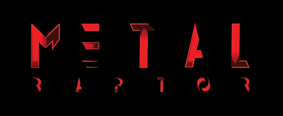

OVERALL STATUS

PART 108REGULATORY DASHBOARD
Regulatory intelligence · RIN 2120-AL82
FAA Part 108
rulemaking tracker.
A source-linked decision dashboard for resilient BVLOS connectivity and navigation infrastructure. Automated checks surface lifecycle events; substantive interpretation is human-reviewed.
DAYS AT OIRA
— days
Received July 10, 2026OIRA MEETINGS
—
Posted records detectedLATEST FEDERAL REGISTER
—
Checking official APIExecutive summary
What leadership needs to know.
Stage: The final rule remains in Executive Order 12866 review at OIRA. This is pre-publication review, not an effective requirement.
Change signal: Loading verified changes…
Metal Raptor: Continue positioning as provider-neutral resilience infrastructure spanning C2, PNT integrity, authenticated exchange, and fleet observability.
The tracker detects official lifecycle changes. It does not infer legal meaning from automated text changes.
Lifecycle
Rulemaking milestones
NPRM published
FAA and DOT proposed standardized BVLOS operations under Part 108 and service-provider rules under Part 146.
CompletedLimited comment reopening
A Federal Register notice reopened comments on specific questions.
CompletedFinal rule received by OIRA
Executive Order 12866 regulatory review began.
CompletedOIRA review and meetings
Review remains active. Meeting records are monitored automatically.
ActiveFinal-rule publication
Expected only after OIRA clearance and agency publication. No date is assumed.
PendingEffective and compliance dates
Dates, guidance, waivers, and implementation actions must come from final text.
UnknownStatus discipline: proposed text and stakeholder requests remain proposals—not mandates—until a final rule is published and effective.
OIRA watchlist
Meetings and review pressure
Posted meetings can show stakeholder attention, but do not prove agency acceptance.
Loading meeting docket…
Substantive provisions
Metal Raptor relevance
| Area | Status | What the proposal says | Metal Raptor impact | Evidence / outreach |
|---|
Proposed text, agency statements, stakeholder requests, speculation, and final requirements must remain separately labeled.
Positioning
Opportunity and risk
Own resilience evidence
Quantify link continuity, latency, handoff, localization integrity, and recovery behavior.
Product evidenceStay provider-neutral
Advocate performance-based language that supports multi-link systems and does not prescribe cellular.
Regulatory angleSecure the exchange
Show authenticated, auditable interfaces to approved airspace and data service providers.
Partner angleAvoid overclaiming
Connectivity and position integrity strengthen DAA but do not independently constitute DAA.
Risk controlRecommended next moves
Three highest-priority actions
Build the assurance evidence matrix
Map C2, PNT, authentication, fleet monitoring, and failsafe metrics to proposed operating and provider responsibilities.
Submit a technology-neutral implementation brief
Explain why outcomes-based requirements enable resilient multi-path architectures without specifying cellular.
Develop ADSP integration targets
Prioritize secure interfaces, operational-status reporting, and partner discussions with likely airspace-service participants.
Open issues
Unresolved questions
- What changes, if any, will OIRA clearance produce in the final text?
- Which operations require strategic deconfliction, conformance monitoring, or third-party services?
- What performance evidence will FAA accept for C2 continuity and resilient PNT?
- How will final text treat non-cooperative aircraft and right-of-way?
- Which compliance dates, advisory circulars, waivers, and implementation programs will follow?
Evidence base
Authoritative sources
OIRA review recordFinal rule review lifecycle↗
OIRA meeting docketPosted EO 12866 meetings↗
Unified AgendaRIN 2120-AL82 record↗
Federal Register NPRMPublished August 7, 2025↗
FAA fact sheetAgency proposal summary↗
Comment reopeningPublished January 28, 2026↗
49 U.S.C. § 44811Congressional rulemaking direction↗
Regulations.gov docketFAA-2025-1908↗
Snapshot history
Method: GitHub Actions checks official endpoints every six hours, compares the new snapshot with the prior committed snapshot, and republishes this site. A successful browser reload shows the latest deployed snapshot—not necessarily a new regulatory check at that instant.